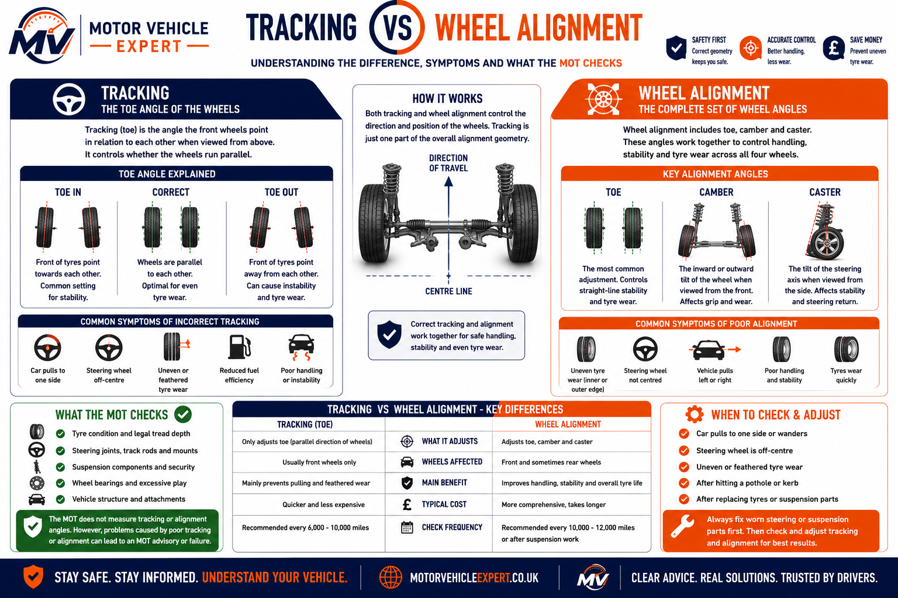
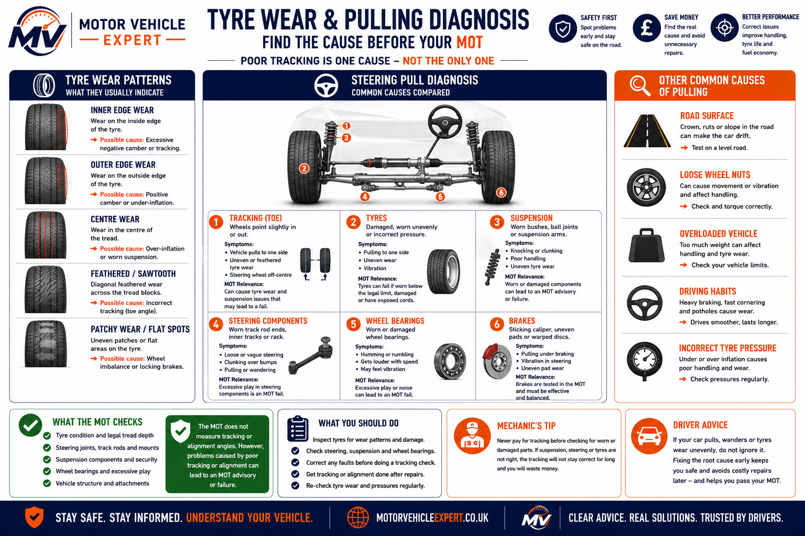

Toe Angle
Not MeasuredThe MOT does not use alignment equipment or adjust tracking during the test.
No. An MOT does not measure tracking with alignment equipment. The tester does not check toe angles, produce an alignment report or adjust the wheels during the test.
However, poor tracking can still affect the MOT if it causes illegal tyre wear, exposed cords, steering pull, suspension wear, track rod problems or unsafe handling signs.
This guide explains what tracking means, how it differs from full wheel alignment, when tracking-related problems can fail an MOT, what symptoms to watch for and what to check before test day.
Tracking itself is not an MOT test item, but the damage caused by poor tracking can matter. Inner-edge tyre wear, exposed cords, steering play, worn suspension parts and unsafe tyre condition can all affect the MOT result.
The MOT does not measure tracking, but tracking-related symptoms can point to defects that are inspected.
The MOT does not use alignment equipment or adjust tracking during the test.
Bad tracking can wear tyre edges below the legal limit or expose cords.
Excessive steering play or worn track rod ends can affect roadworthiness.
Suspension wear can knock tracking out and must be repaired before alignment.
Pulling may be tracking, tyres, brakes, steering or suspension related.
The MOT checks the safety consequences, not the tracking adjustment itself.
Never pay for tracking before checking worn steering or suspension parts. If a track rod end, ball joint, lower arm bush or suspension arm has play, the tracking may not hold correctly and tyre wear can return quickly.
No. The MOT does not check tracking using specialist wheel alignment equipment. The tester does not measure toe angles, print an alignment report or adjust the wheels during the MOT.
A car can pass an MOT with poor tracking if the tyres, steering, suspension and wheel bearings are still safe and legal on the day of the test.
But tracking-related problems can still affect the MOT. If poor tracking has caused illegal tyre wear, exposed cords, steering defects, suspension wear or unsafe handling, the vehicle can fail on those items.
Tracking itself is not the MOT test item. The MOT checks the safety consequences, such as tyre damage, steering play, suspension wear and roadworthiness defects.
A car with poor tracking may drive with an off-centre steering wheel, pull to one side, scrub tyre edges or wear the inside shoulder of the tyre. The MOT tester may not measure the tracking, but they will inspect tyre condition, steering components and suspension condition.
If the tyre is illegal, cords are visible or the steering/suspension has excessive play, the MOT result can be affected even though tracking itself is not measured.
Do not pay for tracking before checking worn parts. If a track rod end, ball joint, lower arm bush or suspension arm has play, the tracking may not hold and the tyres can start wearing again quickly.
This infographic explains why tracking is not measured during the MOT. The MOT checks tyres, steering, suspension, wheel bearings and roadworthiness, while professional tracking adjusts wheel direction to reduce tyre wear, pulling and poor handling.
Wheel tracking refers to the direction the wheels point when viewed from above. It normally involves adjusting the toe angle so both front wheels run parallel and the tyres roll correctly along the road.
Toe-in means the fronts of the wheels point slightly towards each other. Too much toe-in can scrub both front tyres, increase rolling resistance and reduce tyre life.
Toe-out means the fronts of the wheels point slightly away from each other. Excessive toe-out commonly causes feathered tyre edges, wandering steering and unstable handling.
Incorrect tracking causes the tyres to scrub across the road surface instead of rolling cleanly. Left unchecked, tyre life can be reduced significantly.

Tracking adjusts the direction the wheels point, while wheel alignment also considers camber, caster and overall suspension geometry. Neither procedure forms part of the MOT, although the inspection may identify tyre, steering or suspension defects caused by poor alignment.
Tracking problems rarely appear overnight. Most drivers first notice an off-centre steering wheel, the vehicle pulling to one side, feathered tyre edges or tyres wearing much faster than expected. Although the MOT does not measure tracking, it does inspect the tyres, steering system, suspension components and overall roadworthiness.
Often caused by tracking, tyres, suspension wear or brake drag.
Usually indicates tracking has moved after suspension work or an impact.
Incorrect tracking can destroy tyres long before they would normally need replacing.
If your tracking suddenly changes after hitting a pothole or kerb, inspect the tyres, wheels, steering and suspension before booking wheel alignment. Damaged components should always be repaired before adjusting the tracking.
Tracking usually focuses on toe angle, while full wheel alignment can include toe, camber, caster and rear axle geometry depending on the vehicle and equipment used.
In everyday UK garage language, tracking usually means adjusting the front wheel toe angle so the wheels point correctly in relation to each other.
Wheel alignment can include toe, camber and caster depending on the vehicle. Some vehicles allow more adjustment than others, especially on the rear axle.
Tracking adjusts wheel direction, usually toe angle, while wheel alignment may also assess camber, caster and overall suspension geometry. The MOT does not perform either adjustment, but it does inspect tyres, steering, suspension and roadworthiness defects that poor alignment can cause.
| Item | Tracking | Wheel alignment | MOT relevance |
|---|---|---|---|
| Main purpose | Corrects toe angle | Checks wider wheel geometry | Not measured directly |
| Common symptoms | Pulling, off-centre steering, tyre scrub | Uneven wear, handling issues, poor stability | Related tyre or suspension faults can fail |
| Typical check | Front toe adjustment | Toe, camber, caster and axle alignment | MOT checks safety, not alignment settings |
| Best time to do it | After steering work or tyre wear | After suspension repairs or impact damage | Check worn parts before adjustment |
If the car pulls, wanders or wears tyres unevenly, do not assume tracking alone will fix it. Check tyres, brakes, steering joints, suspension arms, bushes and wheel bearings first.
Bad tracking itself is not normally the MOT failure. The MOT risk comes from the tyre, steering, suspension and handling problems poor tracking can cause.
The MOT does not measure tracking angles. However, illegal tyre wear, exposed cords, excessive steering play, worn suspension parts or unsafe handling symptoms can affect the MOT result.
The tracking setting itself is not checked with alignment equipment during the MOT.
Inner or outer edge wear can fail if tread is below the legal limit or cords are exposed.
Worn track rod ends, ball joints, arms or bushes can affect wheel position and roadworthiness.
| Tracking-related issue | Direct MOT fail? | Why it matters | Best action |
|---|---|---|---|
| Tracking slightly out | No | Not measured during MOT | Monitor tyre wear and steering feel |
| Steering wheel off-centre | Usually no | May point to alignment, steering or suspension issue | Inspect before MOT |
| Car pulls to one side | Sometimes | Could involve tyres, brakes, steering or suspension | Diagnose the cause before alignment |
| Uneven tyre edge wear | Yes, if severe | Tyre can be below legal limit or damaged | Replace tyre and fix the tracking cause |
| Tyre cords showing | Yes | Dangerous tyre defect | Do not drive; replace tyre immediately |
| Worn track rod end | Yes, if excessive | Steering play can be unsafe | Repair and align afterwards |
| Worn ball joint | Yes, if excessive | Can affect steering, suspension movement and tyre wear | Repair before tracking |
| Worn suspension arm or bush | Yes, if excessive | Can affect wheel position, handling and tyre life | Repair before alignment |
| Severe pull after impact | Possible | May indicate tyre, wheel, brake, steering or suspension damage | Inspect urgently before MOT |
If tyre wear is already visible, tracking alone may not be enough. Replace unsafe tyres, repair worn steering or suspension parts, then set the tracking or full alignment afterwards.
Tracking problems rarely appear on their own. Most drivers first notice steering pull, uneven tyre wear or an off-centre steering wheel long before the MOT inspection.
The vehicle travels straight but the steering wheel is not centred, often indicating tracking movement or previous steering repairs.
The vehicle drifts on a level road without steering input. Tyres, brakes, suspension or tracking could all be responsible.
Pulling causes →The tyre may appear normal from outside but be badly worn along the inside shoulder because of incorrect tracking or suspension wear.
Outer shoulder wear may indicate poor tracking, incorrect tyre pressure, aggressive cornering or worn suspension components.
Incorrect tracking can significantly shorten tyre life, increasing replacement costs and potentially leading to MOT failures.
If the vehicle still pulls after tracking adjustment, inspect the tyres, brakes, wheel bearings, steering and suspension.
Pulls after tracking →
This diagnostic infographic compares common tyre wear patterns caused by incorrect tracking, poor wheel alignment, worn suspension components and incorrect tyre pressures. Understanding where the tyre is wearing often provides the quickest clue to the underlying fault before booking an MOT or replacing tyres.
Always inspect the full width of each tyre, including the inner shoulder. Many tyres that appear legal from outside are already below the legal tread depth on the inside because of poor tracking or worn suspension components.
Before booking tracking or alignment, check the tyres, steering and suspension properly. If worn parts are ignored, the tracking may not hold and tyre wear can return quickly.
Do not set tracking on a car with worn steering or suspension parts. Repair track rod ends, ball joints, bushes, lower arms and unsafe tyres before paying for alignment.
If there is play in a track rod end, ball joint, lower arm bush or suspension component, tracking may not hold correctly.
Poor tracking often wears the inner edge first, where damage is easy to miss during a quick walk-around.
Worn track rod ends can create steering play and should be repaired before tracking is adjusted.
Worn bushes, ball joints or lower arms can change wheel position and cause tyre wear to return.
The safest order is inspect, repair, replace tyres if needed, then align. Paying for tracking before fixing worn parts can waste money and may still leave the car at risk of an MOT failure.
Wheel tracking is usually one of the more affordable steering services, but costs can increase significantly if worn steering, suspension or tyre components must be replaced before alignment can be carried out.
Basic front toe adjustment.
£30–£70Complete alignment on modern vehicles.
£60–£150Replace worn steering joint before tracking.
£80–£180+Bushes or complete suspension arm.
£150–£400+Recommended following steering or suspension replacement.
£60–£150Required if poor tracking has caused illegal wear.
£60–£200+ per tyrePaying for tracking before repairing worn steering or suspension parts is often false economy. Replace worn components first, then carry out tracking or full wheel alignment once the vehicle is mechanically sound.
| Repair or Service | Typical UK Cost | Usually Needed Before Tracking? |
|---|---|---|
| Front wheel tracking | £30–£70 | No |
| Four-wheel alignment | £60–£150 | No |
| Track rod end replacement | £80–£180+ | Yes |
| Lower arm replacement | £150–£400+ | Yes |
| Ball joint replacement | £90–£250+ | Yes |
| Suspension bush replacement | £120–£350+ | Yes |
| Tyre replacement | £60–£200+ per tyre | Sometimes |
If your tyres are already worn unevenly, correcting the tracking will prevent further damage but will not repair tyres that are already below the legal tread depth. Inspect the full width of every tyre before booking an MOT.
Clear answers to common UK driver questions about tracking, wheel alignment, tyre wear, steering pull and MOT inspections.
No. An MOT does not measure tracking using wheel alignment equipment. The tester does not check toe angles or adjust the wheels during the MOT.
Not directly. Bad tracking itself is not normally the fail item, but it can cause tyre wear, exposed cords, steering pull or suspension problems that may fail.
No. Tracking usually refers to toe adjustment, while wheel alignment is broader and can include toe, camber, caster and rear axle geometry.
Yes, if the car pulls, the steering wheel is off-centre or tyres are wearing unevenly. Check worn steering or suspension parts first.
Yes, if the tread is below the legal limit, cords are exposed, the tyre has a bulge or the tyre is seriously damaged.
Possibly, but the cause should be checked because it may point to tracking, tyre, steering, suspension or previous repair issues.
Bad tracking makes the tyres scrub across the road instead of rolling cleanly, often wearing the inner or outer shoulder much faster.
Yes. Tracking or wheel alignment should normally be checked after replacing track rod ends, steering arms, lower arms or suspension components.
Yes. Worn bushes, ball joints, lower arms and suspension damage can change wheel position and cause tracking or alignment problems.
No. A valid MOT does not prove the tracking is correct. It only means the vehicle met the required roadworthiness standards on the day of the test.
If tyre wear returns after tracking, inspect the tyres, wheels, track rod ends, bushes, ball joints, lower arms and suspension before paying for another adjustment.